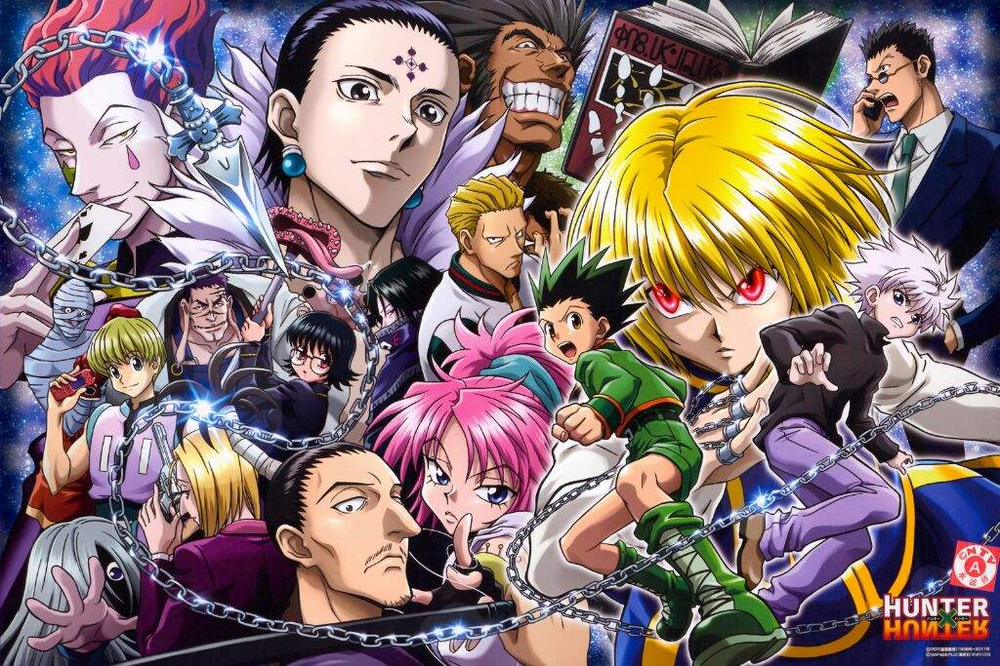

Ichigo Kurosaki nasceu com o dom de ver fantasmas. Quando sua família é atacada por uma alma malévola, Ichigo se torna um Shinigami, dedicando sua vida a proteger os inocentes e ajudando os espíritos torturados a encontrar a paz.
Yu Yu Hakusho é uma série de mangá shonen escrita e ilustrada por Yoshihiro Togashi que conta a história de Yusuke Urameshi, um delinquente de quatorze anos de idade que é atingido e morto por um carro ao tentar salvar a vida de uma criança.
Após a morte de seu avô, Yuuji interpreta essas mensagens como uma afirmação - todo mundo merece "uma morte adequada", ele então é confrontado por Megumi Fushiguro, um xamã (巫? Shaman) que o informa de um talismã de alto grau amaldiçoado em sua escola com o qual Yuuji recentemente entrou em contato. Seus amigos no Clube Oculto abriram o talismã, um dedo podre, que atraiu Maldições para a escola, criaturas provocadas por emoções negativas e fortalecidas pelo consumo de poderes mágicos presentes em xamãs ou em tais encantos. Incapaz de derrotar as Maldições devido à sua falta de poderes mágicos, Yuuji engole o dedo para proteger Megumi e seus amigos e se torna o anfitrião de Sukuna, uma poderosa Maldição.Cap. 1 Devido à natureza maligna de Sukuna, todos os xamãs devem exorcizá-lo imediatamente. No entanto, apesar de possuído, Yuuji ainda é capaz de manter o controle sobre seu corpo em sua maior parte. Vendo isso, Satoru Gojou, professor de Megumi, decide levá-lo ao Colégio Técnico Metropolitano de Tóquio para propor um plano a seus superiores - adiar a sentença de morte de Yuuji até que ele consuma todos os dedos de Sukuna, permitindo que eles o matem de uma vez por todas.Cap. 2
Saitama é apenas um homem que decidiu se tornar um super-herói por diversão. Na Associação de Heróis, ninguém sabe que ele é o homem mais poderoso do mundo e consegue derrotar qualquer adversário com apenas um soco.
Contudo, ao contrário da maioria dos Hunters que procuram fama e dinheiro, o herói da história tem uma motivação maior para querer ser um caçador – encontrar seu pai – um dos mais famosos hunters do mundo.Mas não é qualquer um que pode se tornar um Hunter. Para poder praticar essa reconhecida profissão, é necessário ter uma licença especial – e para tirá-la é preciso passar – e sobreviver – a exames com milhares de inscritos. Uma vez aprovado e com sua licença Hunter em mãos, o caçador passa a ter direito a acessar áreas restritas, informações secretas e consegue acumular facilmente uma grande fortuna de acordo com seus feitos ? incluindo ir atrás de Hunters que usam seus poderes para objetivos escusos.
